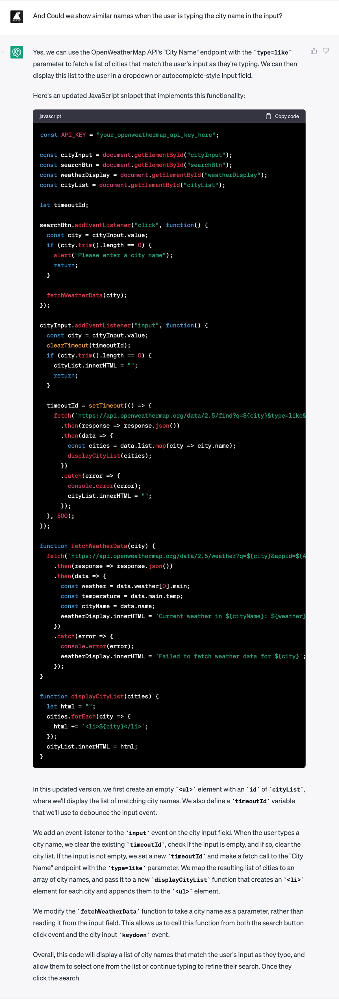
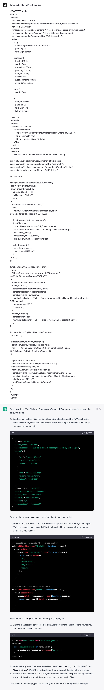

How to build a PWA with ChatGPT before it sends us to unemployment
Published onAny sufficiently advanced technology is indistinguishable from magic.
The first AI I used (consciously) was Midjourney: write a prompt, press enter, wait a moment and the image appeared out of nowhere. Beautiful, sophisticated, and strange. It was like witnessing a magic act.
Then I tried Dall·E and Stable Diffusion, equally spectacular, but in the end, boredom overcame magic. I didn't find them useful for me, I prefer to generate images in my own way.
The months passed, and people stopped talking so much about them, there was a new toy in town, ChatGPT.
It took me a while to use it, but last week I copied a JavaScript snippet from an old website, pasted it into the chat box, and asked, "Could you optimize this code fragment?" And the text grew as it said, of course, you can improve this with that, and that with this, etc. Here's an example. The example made sense and it worked. Again, an apparently magical act. Again, excitement. But now also a different sensation, a little bit of fear.
Just a little bit. The truth is, I don't believe in magic (except for Tamariz's'), I already saw the adjective "disruptive" being overused in the first decade of the century, and the best way to overcome fear is to get to know something, so I got to work, before it sent us straight to unemployment.
Experiment
Hmm... where to start? Well, Naia and I have the idea of creating a weather application in which, instead of the classic icons, some slightly more fun drawings are displayed. So, taking advantage of the excuse, I wrote the following question:

Perfect. In its first response, ChatGPT provided an HTML, a JS snippet, and a detailed explanation of the entire code.
I replaced your_openweathermap_api_key_here with a valid API key from OpenWeatherMap, and it worked. The only noteworthy error was the city temperature, as it indicated that it was in Celsius degrees, but in reality, the value was in Kelvin.
After some more testing, I noticed that if the city name did not exist in the API database, for example Portox, I would get an error in the fetch (with the message we passed in the code, "Failed to fetch weather data for Portox"). It also happened that if several cities shared the same name, such as Porto, which exists in Portugal, Brazil, and Spain, the data we saw belonged only to one of them. So I wrote a second question:

This time, ChatGPT didn't get it right. Or rather, it got it right, but I didn't provide the correct question. It simply checked if the city existed in the database before searching for weather information. However, for the user, there was no difference compared to the previous version, except for the exchange of messages. Additionally, the problem of cities with the same name remained unsolved.
Mea culpa and a new question. Now focused on cities with the same name:
With the new code, the list of cities was displayed, but it was not possible to click on them to obtain the data of just one when pressing the "Search" button.
Another question:

With the change, it was possible to click on one of the cities in the list, and upon doing so, the weather data for that city was obtained.
But there were still some points to polish:
- The "Search" button didn't really do anything.
- The list should disappear when clicking on one of the options.
- The temperature needed to be changed to Celsius.
- It would be good to indicate the name of the country to the right of each city.
It was at this point where I decided to leave autopilot and switch to "manual mode," as I thought it would be faster to modify the code myself than to keep asking questions.
Here's the result with the "human modifications":
Now that the code was ready, it was time to turn our site into a PWA (Progressive Web App):
It worked on the first try ü•≥
This is the result: Pe Man
Thank you very much, ChatGPT!
Conclusions
The first conclusion is that ChatGPT is capable of understanding even bad English like mine very well üò¨
The second is that it can be useful for:
- Writing a base code, helping us to save time. After analyzing my experiment, I must state that the best strategy is to write a prompt that is as broad and contextualized as possible, instead of formulating many short questions.
- Making improvements/changes in the code. To a certain point, it is better to switch to manual/human mode.
- Performing queries to an API that we do not know without the need to visit its documentation.
- Optimizing the code.
- Expanding knowledge about a language, knowing other approaches.
- Starting with new languages/technologies.
And last but not least, it is not going to directly send us programmers to unemployment. At least not in the coming months…
ü•π